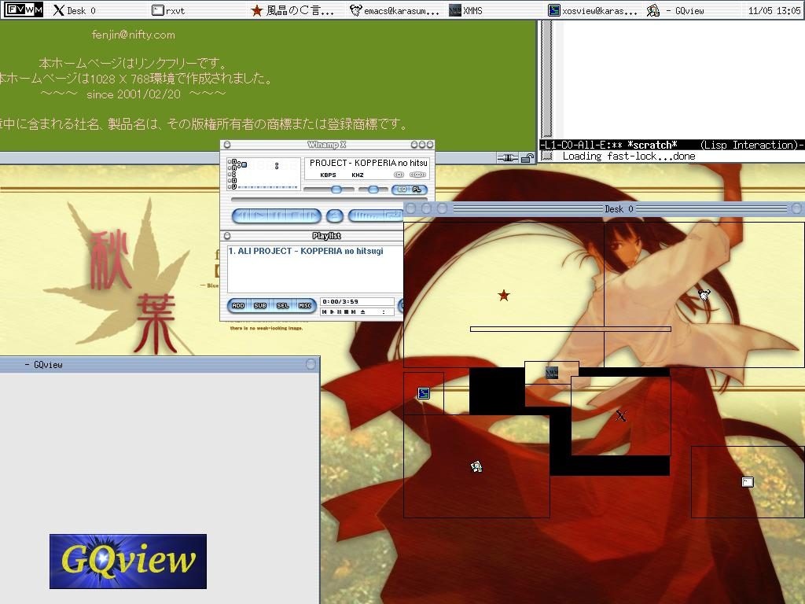
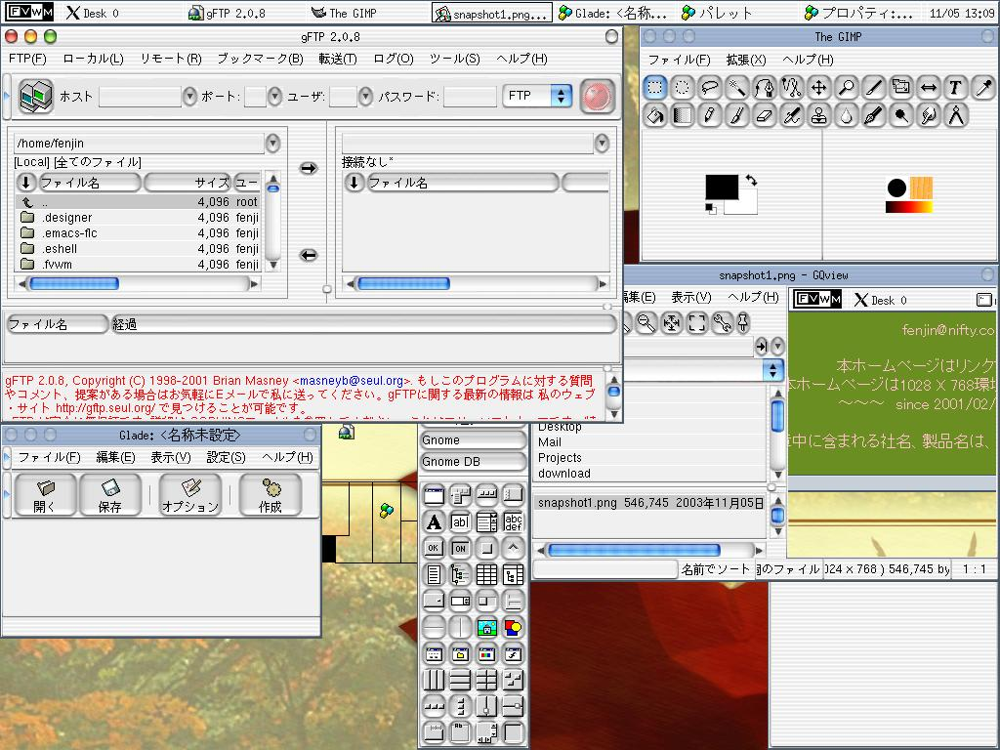

壁紙表示プログラムの変更(blackbox→ImageMagickのdiplayコマンド)
「本題」に戻る
前回ですね。背景(つまりルートウインドウ:root window)に壁紙を表示するためのプログラムに「blackbox」の「bsetbg」コマンドを使うようにしてました。
しかし・・・やっぱり面倒くさい。何だって壁紙を表示したいだけにblackboxまでいれなくちゃあかんのだ。それよりももっと楽チンな方法があるのではないのか？そう思っていろいろ調べていましたら、画像操作で有名な「ImageMagick」中の「display」コマンドが壁紙表示にも使えることを発見しました。
基本的に昨今の、デスクトップを意識したLinuxディストリビューションでしたらほぼ確実にImageMagickのRPMは提供されていますし、BSD系列でも安定して供給されているソフトウェアです。これなら、画像フォーマットの縛りもぐっと減るし、なによりもわざわざblackboxを入れる必要もない。願ったり、叶ったりです。
というわけで、前回の設定ファイル中で「bsetbg」コマンドを使っていた部分を修正します。ImageMagickのdisplayコマンドに付いては、GNUヘルプオプションやmanなどを使って簡単に、しかも分かりやすい英文で記述されているのでそちらを参照してください。
というわけで変更部分をば。
[前回]
# Note: Require blackbox tool. # 背景画像をbsetbgプログラムを使って張り込みます。Execコマンドの使い方 # はmenusファイル内の説明を参照して下さい。 # Exec exec bsetbg -full $HOME/.fvwm/esox/images/sky_esox2_1024.xpm[修正後]
# Note: Require blackbox tool. #Exec exec bsetbg -full $HOME/.fvwm/esox/images/sky_esox2_1024.xpm # Note: Require ImageMagick Exec exec display -window root +contrast $HOME/images/tsuki-hime/20031006801665.jpg
FvwmPagerの見栄えの調整とエッジスクロール設定の変更
「本題」に戻る
今回の調整内容中、もっとも大きな変更がFvwmPagerの本格的な利用開始と、それに伴うデスクトップのエッジスクロール動作の無効化でしょう。
そのまえに、まずなぜこの部分を変更したのかをお話ししたいと思います。
デスクトップのエッジ部分にマウスを持っていくと、となりのデスクトップに画面全体がスクロールする。これはfvwmならではの醍醐味でした。実際、最初のesoxではその機能を有効にしており、なおかつ2x2に分割したデスクトップ画面で左右両端と上下のデスクトップ間でループスクロールになるようにしていました。
しかしですね。この機能、使っていると結構うざいんですわ。マウスポインタを画面の端に持っていく機会は結構多いらしくて、しょっちゅう画面がスクロールしてしまう。本来ユーザビリティをあげるための機能が、却って下げていたんですね。
とはいえ、スクロール機能をオフにすればfvwmの醍醐味が楽しめなくなってしまう・・・一応、CtrlやAltとカーソルキーの組合せで何段階かに別けてスクロールできるようにはしていますが、状況によってはランダムにfvwmのキーショートカットが利かなくなってしまう場合がままあるので完全に有効とは言えません。
そこでFvwmPagerの出番となったわけです。
ところが。このFvwmPager・・・大概はFvwmButtonの中に組み込まれていたりするわけですが、FvwmTaskBarのみをメインに据えたesoxではそういう手も取れません。つまり、画面上の置場が無いわけです。実際問題ですね、FvwmPagerはある程度の大きさで表示してくれないと、見づらくてしょうがない。
でえ。なんとか試行錯誤を重ねていたんですが・・・ふとこんな考えが頭を持ち上げて来たんですわ。
FvwmPagerを常時表示させるモジュールとして考えるから置き場所に困るのでは無いか？もし一つのアプリケーションとみなしてしまい、普通にタイトルバーを持ったウインドウとして表示してしまえば・・・
こうすれば、FvwmTaskBarの省スペース性を維持しながら、なおかつ大画面のFvwmPagerで縦横無尽なデスクトップナビゲーションが可能になります。
・・・ふと気づいたんですが。fvwm系のスクリーンショットで、FvwmPagerどDockアプリやデスクトップアプリとして使っている画面は数あれど、タイトルバー付きのれっきとしたアプリケーションとして表示させているチューニングは今だかつて存在しなかった。
さて、では肝心のFvwmPagerのスタイル設定やオプション設定です。今回はちょっと間抜けな勘違いで４時間以上無駄に悩んでしまいましたがとにかく動けばこちらの勝利。どんな設定になったか、まずはFvwmPager部分だけの変更模様を。続いてエッジスクロール機能周辺を紹介します。
FvwmPager部分
[変更前]
############################################################## # # Fvwm Modules Configuration # ... Style "FvwmPager" NoTitle, NoHandles, WindowListSkip[変更後]
############################################################## # # Fvwm Modules Configuration # ... # 今回はナウい雰囲気を出すために、壁紙透過っぽい見栄えに挑戦してみます。 Colorset 100 Transparent # FvwmPagerのスタイルの再設定です。タイトルバーやウインドウリストのヒットの有効化など、 # 一般のアプリケーションと同様のスタイルを明示的に指定します。(上のFvwm*スタイルでそこら辺を # 軒並オフってるため、明示的な再指定が必要になる。) # "ParentRelativity" は、FvwmPagerなどのモジュールでTransparentなColorsetを使うときに必要に # なるオプションらしいです。 Style "FvwmPager" Title, WindowListHit, CirculateHit, Sticky, StayOnTop, ParentalRelativity # もうちょっと挑戦しました。せっかく、「一個のアプリでありながらデスクトップと密接に連係する # 不思議なアプリ」に見せるわけなので、枠線等を表示せず、あたかもデスクトップ中に直に表示され # ているような不思議な見栄えにしました。その成果は後程スクリーンショットでお見せします。 Style "FvwmPager" BorderWidth 0, NoHandles #*FvwmPager: Geometry $[vp.width]x$[vp.height]+0+0 # FvwmPagerの大きさを適当に指示します。上のはFvwm変数を利用して、全画面表示っぽくした設定です。 # (ちょっと見づらかったのでボツ。) *FvwmPager: Geometry 512x384 *FvwmPager: WindowColorsets 100 100 *FvwmPager: Colorset * 100 *FvwpPager: HilightColorset * 100 *FvwpPager: Balloons *FvwpPager: BalloonColorset 100 *FvwmPager: NoSeparators # アプリウインドウでMiniiconが設定されている場合は表示してあげます。 *FvwmPager: Miniicons # デスクトップ名(Desktop: 0みたいな文字列)を非表示にするオプションです。 *FvwmPager: Font none
エッジスクロール部分
[変更前]
# ---------------------- Paging and Mouse Parameters ----------------------
#
# 仮想デスクトップの数を変更します。ここでは縦横２ずつ、計４枚作ります。
#
DeskTopSize 2 2
# Warp between each edges.
#
# マウスポインタがスクリーンの端にあると、下のEdgeResistanceによりますが
# 隣の仮想デスクトップにスクロールします。パーセンテージで指示し、「0 0」に
# してしまうとスクロールしません。通常は「100 100」で一画面分まるまる移動し
# ます。この例にすると、仮想デスクトップ全体としての端同士がループするよう
# になります。
#
EdgeScroll 100000 100000
[変更後]
# ---------------------- Paging and Mouse Parameters ---------------------- DeskTopSize 2 2 # 今回はエッジスクロール機能をオフにするだけですので、スクロールパーセンテージを # x, yともにゼロにすれば目的は達成できます。 #EdgeScroll 100000 100000 EdgeScroll 0 0最後に、FvwmPagerの起動用メニューを付け足します。適当なAddToMenuコマンドに以下の行を付け足してください。
# 結構便利です。xman。 + "xman%menu/xapp.xpm%" Exec exec xman # -transient付きでFvwmPagerを起動すると、デスクトップをスクロールすれば終了する、 # ダイアログボックスアプリケーションとして動きます。 + "FvwmPager(DialogBox)%menu/xapp.xpm" Module FvwmPager -transient * # こちらは表示しっぱなしの、普通のアプリっぽい動作です。 + "FvwmPager(App)%menu/xapp.xpm" Module FvwmPager *
今期最終結果スクリーンショット
「本題」に戻る
というわけで、今回の調整の成果をスクリーンショットでお見せする。

如何だろうか？画面右下を占めている、透過矩形の集合体。それが、Borderを0でNoHandlesにしたFvwmPagerのなれの果てである。一つのアプリケーションとして、邪魔なときはアイコン化しておき、必要なときだけ再前面に表示させるという非常に自然な使い方ができる。個人的には何でこういったチューニングが出て来ないのか、不思議でならない。
最後に。古参のUNIXユーザーが見たら卒倒し兼ねない程、伝統的なUNIX系WMのルック＆フィールを無視し、ひたすら見栄えの派手さとWindowsっぽい使用感を求めたスクリーンショットを提示しよう。fvwmとGTKで私の現在の技術力で実現できる限りの、おそらく最終調整になるだろう。

これはGTK+で、Aquqなテーマを探してインストールして実現された。さあWindowManagerへ挑戦しようとする(精神的な意味での)若者よ。そしてWindowsからUNIX/Linuxの世界に入ったばかりの新参者達よ。刮目してみているが良い。そして。そう、そして。
UNIXの伝統を依怙地に張り続けるスーパーハッカーたちよ。お前らが本気でUNIX/Linuxを普及させたいと思うならば、まずEmacsとWindowManagerをどうにかしろ。てめえ達が、完成しつくしたシステムの上に安穏としているから、私ごときが必死になってEmacsLisp勉強したり、fvwmのカスタマイズの勉強をしたりしなくちゃいけないんだろうが！！ユーザーに勉強を押しつけるな！！誰もが、友人の一人にプログラマーを持っているとは限らないんだよ！！今のご時勢、EmacsLisp勉強している暇なんて無いんだよ！！！！！！
とっとと作れ！！！ncurses, libxml, libxml2 で必要な素材は揃っただろう！？とっととCでDynamicLoadできるモジュールを利用した、コンソールベースの、しかしncursesを利用したDOSを彷彿とさせるMDIシステムの、まさにWindowsでいうところのOLEなシステムを作ってくれ！！！！とくにEmacs！！！！！！！お前、もう引退しろよ！！！！！！！！！
はあ、はあ・・・
なぜ昨今のLinuxブームにもかかわらず、Windowsがこれほど幅を利かせているのでしょうか？
最大の原因は、「勉強しなくちゃ使いこなせない」システムになっている事だと思います。
どういうことか、Windows側を見ることにより明らかにします。
UNIX系列のコンソールフリークがWindowsをけなす一部に、GUIに頼り切ったシステムがあることは疑問の余地がありません。
ならば。ならば、私は怒りを込めてコンソールフリークに質問したい。
だったらおまえら、Windowsヘルプシステムに匹敵するかそれ以上のmanページ全文検索システムを作ったんだろうな？
腐ってる。UNIXマニア達の心の奥底は、救いがたい程、耐えがたい程腐っている。コンソールベースの「難しい」システムを自由に操ることの優越感を覚えつつも、しかし世間は圧倒的にWindowsなためその技能を自慢することができない。昔からPCネットワークに居たことを利用し仲間内だけでヲタッキーなコミューンを作り、Windowsから移って来た初心者ユーザーを心の奥底で嘲り嗤うその心根。劣等感の裏返しの優越感。優越感の裏返しの劣等感。理解されない苦しみを開き直りと居直りでごまかし、Windowsを使ってみたい、いや使いたいという本音を隠していや自覚すらせずにWindowsサーバーがやられれば嗤い、メール添付ウィルスが来れば嗤い。
頼む。頼むから、エディタとWindowManagerをどうにかしてくれ。Emacsいい加減作り直してくれ。Xウインドウに関してもデフォルトでXDirectFB有効で、アルファブレンド完全有効化してくれ。でなけりゃ、言うぞ。やっぱり言うぞ。
Linux/UNIXを愛しているがゆえに、Longhornマンセー。LonghornのWinFXがあればもういーや。多分。
GUIプログラミングを要求するWindowsは、プログラマーに負担を強いる大小として「ユーザーインターフェイスの洗練」というユーザー側の利点を生み出した。つまりGUIデザインをする以上、プログラマーはどうしても「ユーザーとの対話」を考えなくてはならない。この必然のために、勉強せずともメニュー項目やアイコン、ヘルプを眺めるだけでとりあえず使えるという環境が自然に整備されて行ったのだ。そして重要なことは、「ヘルプ」メニューへのアクセス方法はGUI故に「常に表示されている」。
対してUNIX系のman, info, GNUヘルプオプションはどうだろうか。GNUヘルプで表示される中身ではなく、GNUヘルプオプションそれ自体だ。
いつになればmanの全文検索ができるようになるのだろう。いつになればinfoの全文検索ができるようになるのだろう。いつになればGNUヘルプオプションが、始めて使うコマンドでも自動的に表示されるようになるのだろう。プログラマー達は不便を感じないのか？R.M.S氏に一度で良いから問い質したい。「あなたは本当に、本当にEmacsのデフォルトキー・バインドに満足しているんですか？一秒たりとも不満を抱いたことが無いんですか？」そして言いたい。「てめえの.emacs、とっとと見せろ。」と。